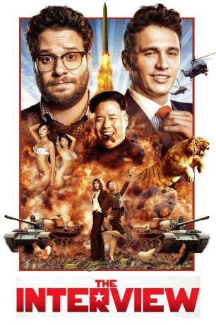
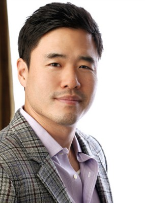
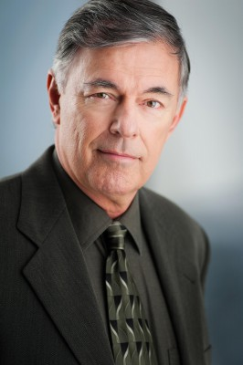
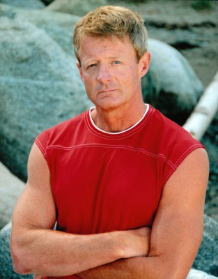
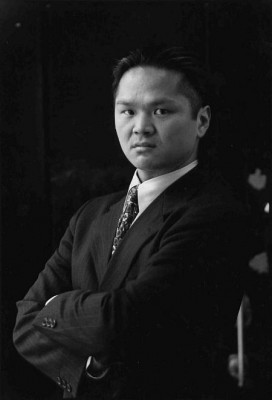

#1176 The Interview
 
 IMDB-Wertung: 6.6 / 10
IMDB-Wertung: 6.6 / 10  Metascore: 52
Metascore: 52 
Dave Skylark ist der Moderator der erfolgreichen Promi-Talkshow "Skylark Tonight". Doch er und sein Kumpel Aaron Rapaport, der die Sendung produziert, wollen höhere journalistische Wellen schlagen. Als sie erfahren, dass Kim Jong-un ein Fan ihrer Sendung ist, planen sie, ein Interview mit dem nordkoreanischen Machtinhaber zu führen. Damit würden sie in der Medienbranche endlich ernst genommen werden. Tatsächlich lädt sie der extravagant auftretende Diktator in sein Land ein und Dave und Aaron stehen vor dem ganz großen journalistischen Wurf. Doch dann tritt plötzlich die CIA-Agentin Lacey an die Freunde heran: Der US-amerikanische Geheimdienst sieht mit dem anstehenden Interview die Chance gekommen, die Kim-Dynastie zu stürzen und will die TV-Macher rekrutieren, um einen Mordanschlag auf den Diktator zu verüben...
Jahr: 2014
Dauer: 112 Minuten
FSK: 12
Land: USA Studio: Columbia PicturesTonspuren: DTS - ,
Untertitel: Deutsch,
Auflösung: 1080p (1920x808) Größe: 8960 MB
Genre: Komödie
Regisseur: Evan Goldberg,  Seth Rogen
Seth Rogen
Drehbuch: Dan Sterling, Seth Rogen, Evan Goldberg, Dan Sterling
Soundtrack: Henry Jackman
Darsteller:
 James Franco als Dave Skylark
James Franco als Dave Skylark Seth Rogen als Aaron Rapaport
Seth Rogen als Aaron Rapaport Lizzy Caplan als Agent Lacey
Lizzy Caplan als Agent Lacey-  Randall Park als President Kim
- Diana Bang als Sook
 Timothy Simons als Malcolm
Timothy Simons als Malcolm Reese Alexander als Agent Botwin
Reese Alexander als Agent Botwin- James Yi als Officer Koh
 Geoff Gustafson als Cole
Geoff Gustafson als Cole- Dominique Lalonde als Jackie
- Anesha Bailey als Janet
 Anders Holm als Jake
Anders Holm als Jake Charles Rahi Chun als General Jong
Charles Rahi Chun als General Jong- Don Chow als Two-Fingered Man
 Colin Foo als Train Passenger
Colin Foo als Train Passenger- Larry Hoe als Train Passenger
- Cleo Yeh als Train Passenger
- Lia Lam als Hot Korean Girl
- Jason Cox als Paparazzi
- Yoosik Oum als South Korean Scientist
- Scott Seol als Rebel Guard
- Justin Lee als Squad Leader
- Dan Sterling als Tech Specialist
-  Fred Henderson als News Anchor
-  Dan Shea als Cab Driver
-  Tommy Chang als Presidential Guard
- Alice Wetterlund als Alice
- Stacey Turner als News Anchor
- Sam Catlin als News Anchor
- Guy Fieri als Guy Fieri
 Ben Schwartz als Publicist
Ben Schwartz als Publicist- Danyella Angel als Caroline , uncredited
 Alan Blumenfeld als Israeli Prime Minister , uncredited
Alan Blumenfeld als Israeli Prime Minister , uncredited- Paola Botero als Dancer , uncredited
- Thomas Cadrot als Fake Korean Soldier , uncredited
 Curt Clendenin als Surprise Partygoer , uncredited
Curt Clendenin als Surprise Partygoer , uncredited- David Diaan als Palestinian President , uncredited
- Eminem als Eminem , uncredited
 Joseph Gordon-Levitt als Joseph Gordon-Levitt , uncredited
Joseph Gordon-Levitt als Joseph Gordon-Levitt , uncredited- Daniel Juhn als North Korean , uncredited
- Sean Kennedy als CIA Kim Jong-un , uncredited
- DaeYoung Danny Kim als North Korean Soldier , uncredited
 James Kyson als Secretary of Communication , uncredited
James Kyson als Secretary of Communication , uncredited- Nicole G. Leier als Skylark Employee , uncredited
 Rob Lowe als Rob Lowe , uncredited
Rob Lowe als Rob Lowe , uncredited Bill Maher als Bill Maher , uncredited
Bill Maher als Bill Maher , uncredited- Mercy Malick als Pundit , uncredited
 Seth Meyers als Seth Meyers , uncredited
Seth Meyers als Seth Meyers , uncredited Kang-ho Song als Soldier Watching the Interview , uncredited
Kang-ho Song als Soldier Watching the Interview , uncredited- Jaiden Vu als N.K. DMZ Soldier , uncredited
Datei: X:\2014(G-M)\Interview, The (2014, FSK12, 1920x808).mkv seit 29.05.2015
Festplatte: HD 2013(I-Z)-2014(A-Z)
 Es gibt insgesamt 136 Filme in der Gruppe '2014(G-M)'
Es gibt insgesamt 136 Filme in der Gruppe '2014(G-M)'